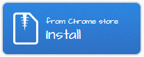
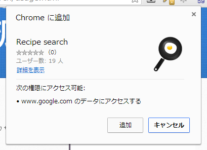
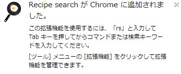

{kind=link}
Welcome to RecipeSearch.
Chrome拡張RecipeSearchはChromeブラウザのアドレスバーから利用できるレシピ検索ツールです。
献立名や食材で絞り込んだり、Googleの検索結果ページヘ直接ジャンプ出来る機能があります。
アイデアは以下のページからいただき、Omniboxを使用するChrome拡張の1つ目として実装しました。
インストール方法
右に並んでいる一番上の青い「Install」ボタンをクリックするとインストールが始まります。

「追加」ボタンをクリックするとインストール完了です。

下記の説明が表示されたら使いはじめることができます。

使い方
- Chromeブラウザ上部のアドレスバーへ半角でrsと入力し、 TABキーまたは半角スペースを続けて入力する
- 入力したrsがフライパンに目玉焼きアイコン付きの「Recipe search」に変わったら、 献立や食材をスペース区切りで入力(スペースを入力したタイミングで検索され ます)
- 献立や食材の単語を入力していく度にレシピが絞りこまれていくので、 気になるレシピタイトルがあればそれをクリックしてレシピページへ直接移動
- 献立や食材が決まってて写真を見比べたりしてレシピを探したいときは、 アドレスバーに入力してる状態でエンターキーを押してGoogle検索結果ページヘ移動
更新履歴
- 0.9
- 限定リリース
ソースコード
ソースコードも公開しています。 右上の「.zip file」や「.tar.gz file」もしくはGithubからフォークしてみてください。
ライセンス
以下の条件を満たす限り、自由な複製・配布・修正を無制限に許可する。
・上記の著作権表示と本許諾書を、ソフトウェアの複製または重要な部分に記載する
・本ソフトウェアは無保証である。自己責任で使用する。
This software is released under the MIT License, see LICENSE.txt.
要望や不具合等
要望や不具合がある方は
GithubIssues
に直接登録してもらえるとありがたいのですが、
登録方法がよくわからないという方は直接連絡ください。
連絡先がわからないという方は、
Twitter上でハッシュタグ #recipesearch をつけてもらうと時々補足します。